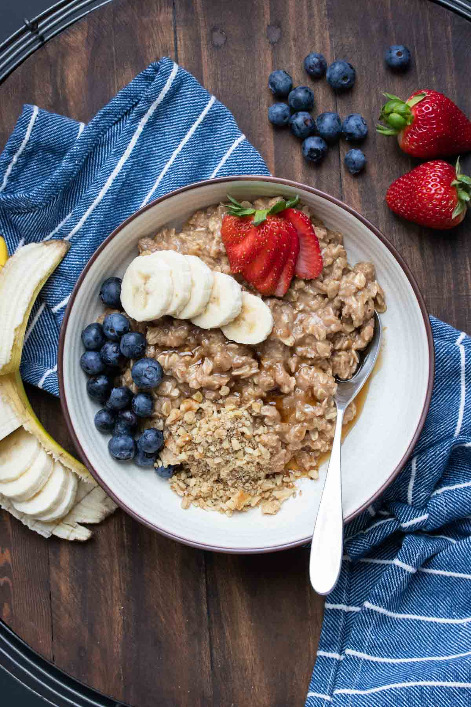

Vegan Oatmeal Recipe

Description:
Get your taste buds ready for this warm and hearty, easy to make vegan oatmeal! We've combined the simplest
most delicious ingredients to create an a breakfast you'll be excited to get up for. It consists mainly of oats,
your favourite plant based milk, a bit of nut butter for thickness and to give it some protien, topped with maple syrup, fruits
and your favourite superfood seeds. Best of all, it takes less than 5 minutes to prepare from start to finish!
Ingredients
- Organic Oats (Don't used non-organic as oats are one of the most pesticide laden foods!
- Jar of your favourite nut butter (we like cashew, but feel free to use PB, almond butter, etc).
- Maple syrup
- your favourite fruits such as bananas or berries(we find bananas work best with this recipe
- Cinnamon to taste
- a cup of your favourite nut milk. We find organic oatmilk works best, but you can try coconut, almong or soy!
Steps
- Boil 300 ml of water or nut milk
- add 1 cup of oats
- Let boil for a few seconds than simmer on low for 5 minutes
- add 2 table spoons of nut butter and stir well
- turn off stove, pour oatmeal into bowl and mix in maple syrup to taste (we recommend 1-2 tablespoons)
- top with sliced bananas or other fruit
- sprinkle hemp seeds, chia seeds or any other favourite seeds on top
- sprinkle with cinnamon
- enjoy!